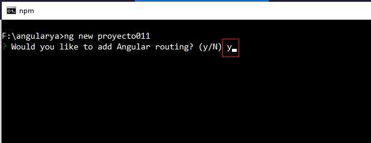
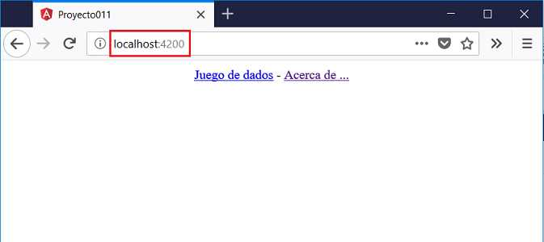
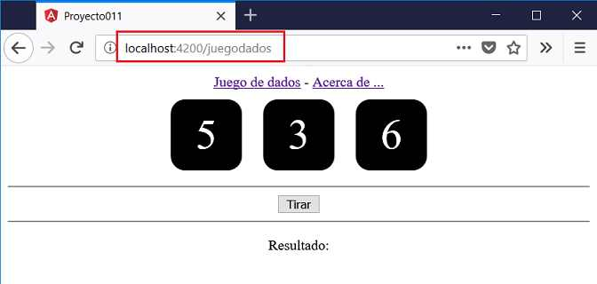
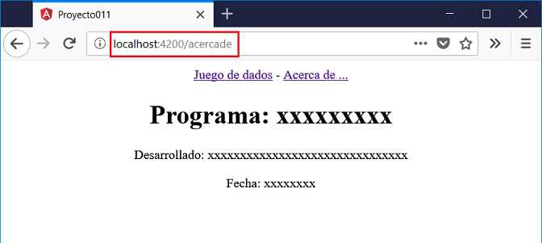

Angular incluye un módulo especial si queremos administrar nuestra aplicación mediante rutas.
Las rutas están dadas por la url, ejemplos de rutas pueden ser:
http://localhost:4200/clientes http://localhost:4200/proveedores http://localhost:4200/contacto
Luego según la ruta especificada mostramos una vista distinta, generalmente indicando un nombre de componente.
Lo más conveniente es utilizar la aplicación Angular CLI para que nos ayude con la generación del módulo de rutas (Router)
Implementar una aplicación que muestre dos enlaces en la parte superior de la página que acceda el primero al juego de tres dados que habíamos desarrollado en ejercicios anteriores. El segundo enlace debe mostrar mediante otra ruta el nombre del programador, versión y fecha de desarrollo.
Desde la línea de comandos de Node.js procedemos a crear el proyecto011 y solicitaremos que nos cree el archivo de routing:
f:\angularya> ng new proyecto011
La primera opción que nos muestra Angular CLI [Would you like to add Angular routing?] respondemos 'y' (si) para que cree las rutas:
La otra sintaxis alternativa para crear las rutas es pasar el parámetro --routing cuando creamos el proyecto:
f:\angularya> ng new proyecto011 --routing
En la carpeta app se crea el archivo 'app-routing.module.ts':
import { NgModule } from '@angular/core';
import { Routes, RouterModule } from '@angular/router';
const routes: Routes = [];
@NgModule({
imports: [RouterModule.forRoot(routes)],
exports: [RouterModule]
})
export class AppRoutingModule { }
Debemos modificar y cargar las dos rutas de nuestra aplicación e importar las componentes que visualizan dichas rutas:
import { NgModule } from '@angular/core';
import { Routes, RouterModule } from '@angular/router';
import { JuegodadosComponent } from './juegodados/juegodados.component';
import { AcercadeComponent } from './acercade/acercade.component';
const routes: Routes = [
{
path:'juegodados',
component:JuegodadosComponent
},
{
path:'acercade',
component:AcercadeComponent
}
];
@NgModule({
imports: [RouterModule.forRoot(routes)],
exports: [RouterModule]
})
export class AppRoutingModule { }
Por el momento debe mostrar un error cuando iniciamos los nombres de las componentes 'JuegodadosComponent' y 'AcercadeComponent' debido que no las hemos codificado aún.
En la propiedad path estamos indicando que si en el navegador disponemos:
http://localhost:4200/juegodados
Luego se muestra la componente JuegodadosComponent.
Desde la línea de comandos de Node.js procedemos a crear cada una de las tres componentes que faltan en la aplicación:
f:\angularya\proyecto011> ng generate component juegodados
Codificamos dos archivos:
juegodados.component.ts
import { Component, OnInit } from '@angular/core';
@Component({
selector: 'app-juegodados',
templateUrl: './juegodados.component.html',
styleUrls: ['./juegodados.component.css']
})
export class JuegodadosComponent implements OnInit {
valor1: number;
valor2: number;
valor3: number;
resultado: string="";
constructor() {
this.valor1 = this.retornarAleatorio();
this.valor2 = this.retornarAleatorio();
this.valor3 = this.retornarAleatorio();
}
retornarAleatorio() {
return Math.trunc(Math.random() * 6) + 1;
}
tirar() {
this.valor1 = this.retornarAleatorio();
this.valor2 = this.retornarAleatorio();
this.valor3 = this.retornarAleatorio();
if (this.valor1==this.valor2 && this.valor1==this.valor3)
this.resultado='Ganó';
else
this.resultado='Perdió';
}
ngOnInit() {
}
}
juegodados.component.html
<app-dado [valor]="valor1"></app-dado>
<app-dado [valor]="valor2"></app-dado>
<app-dado [valor]="valor3"></app-dado>
<hr>
<button (click)="tirar()">Tirar</button>
<hr>
<p>Resultado:{{resultado}}</p>
Generamos ahora la componente 'dado':
f:\angularya\proyecto011> ng generate component dado
Codificamos sus tres archivos:
dado.component.ts
import { Component, OnInit,Input } from '@angular/core';
@Component({
selector: 'app-dado',
templateUrl: './dado.component.html',
styleUrls: ['./dado.component.css']
})
export class DadoComponent implements OnInit {
@Input() valor: number=0;
constructor() { }
ngOnInit() {
}
}
dado.component.html
<div class="forma">
{{valor}}
</div>
dado.component.css
.forma {
width: 5rem;
height: 5rem;
font-size: 3rem;
color:white;
background-color: black;
border-radius: 1rem;
display: inline-flex;
justify-content: center;
align-items: center;
margin:10px;
}
Finalmente creamos la última componente:
f:\angularya\proyecto011> ng generate component acercade
Modificamos el archivo 'acercade.component.html':
<h1>Programa: xxxxxxxxx</h1> <p>Desarrollado: xxxxxxxxxxxxxxxxxxxxxxxxxxxxxxx</p> <p>Fecha: xxxxxxxx</p>
Si abrimos ahora el archivo app.module.ts tenemos declarados las 4 componentes e importado el módulo AppRoutingModule':
import { BrowserModule } from '@angular/platform-browser';
import { NgModule } from '@angular/core';
import { AppRoutingModule } from './app-routing.module';
import { AppComponent } from './app.component';
import { JuegodadosComponent } from './juegodados/juegodados.component';
import { DadoComponent } from './dado/dado.component';
import { AcercadeComponent } from './acercade/acercade.component';
@NgModule({
declarations: [
AppComponent,
JuegodadosComponent,
DadoComponent,
AcercadeComponent
],
imports: [
BrowserModule,
AppRoutingModule
],
providers: [],
bootstrap: [AppComponent]
})
export class AppModule { }
Nos queda modificar la componente principal 'app.component.html':
<div style="text-align:center">
<a routerLink="/juegodados">Juego de dados</a> -
<a routerLink="/acercade">Acerca de ...</a>
<div>
<router-outlet></router-outlet>
</div>
</div>
Mediante la etiqueta 'router-outlet' indicamos el lugar que debe mostrar la componente especificada por la ruta configurada en el archivo 'app-routing.module.ts'
Para cambiar de ruta mediante hipervínculos debemos iniciar la propiedad 'routerLink' asignando la ruta respectiva.
Si ejecutamos ahora el proyecto:
ng server -o
Podemos ver distintos resultados según la ruta indicada:
Si accedemos al primer hipervínculo (tener en cuenta que no se recarga la página, no hay una petición al servidor, sino se resuelve la ruta con aplicación Angular en el navegador):
Finalmente si accedemos a la otra ruta:
Podemos probar esta aplicación en la web aquí.